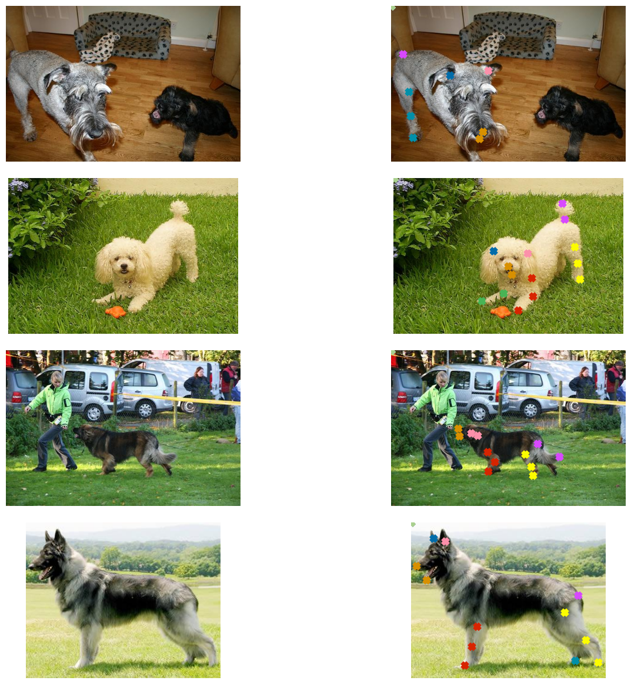
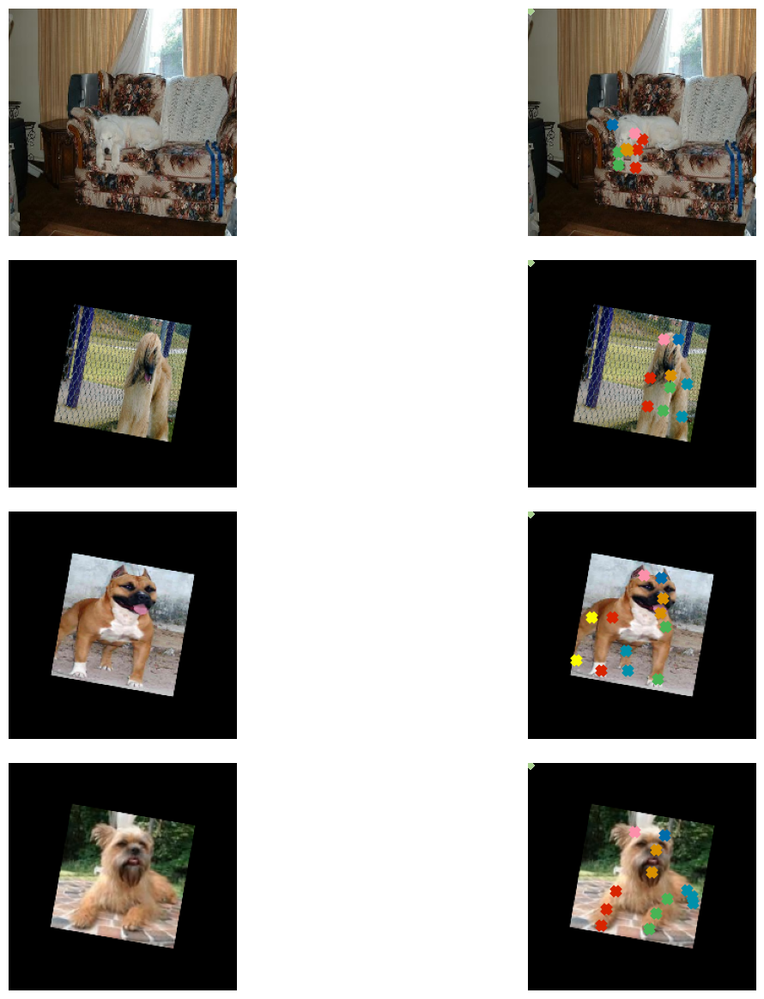
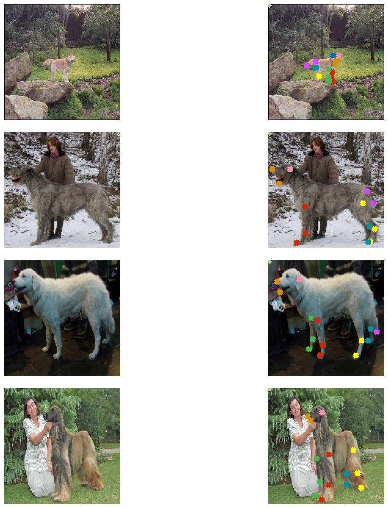
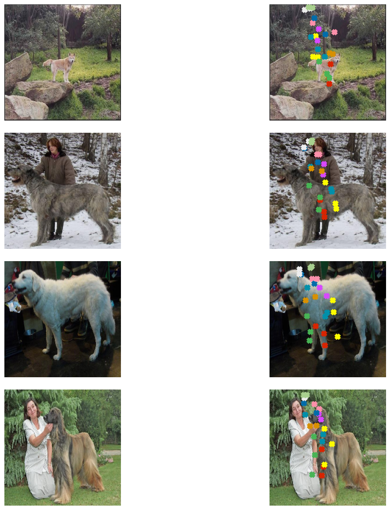

Keypoint Detection with Transfer Learning
Author: Sayak Paul, converted to Keras 3 by Muhammad Anas Raza
Date created: 2021/05/02
Last modified: 2023/07/19
Description: Training a keypoint detector with data augmentation and transfer learning.

Keypoint detection consists of locating key object parts. For example, the key parts of our faces include nose tips, eyebrows, eye corners, and so on. These parts help to represent the underlying object in a feature-rich manner. Keypoint detection has applications that include pose estimation, face detection, etc.
In this example, we will build a keypoint detector using the
StanfordExtra dataset,
using transfer learning. This example requires TensorFlow 2.4 or higher,
as well as imgaug library,
which can be installed using the following command:
!pip install -q -U imgaug
Data collection
The StanfordExtra dataset contains 12,000 images of dogs together with keypoints and segmentation maps. It is developed from the Stanford dogs dataset. It can be downloaded with the command below:
!wget -q http://vision.stanford.edu/aditya86/ImageNetDogs/images.tar
Annotations are provided as a single JSON file in the StanfordExtra dataset and one needs to fill this form to get access to it. The authors explicitly instruct users not to share the JSON file, and this example respects this wish: you should obtain the JSON file yourself.
The JSON file is expected to be locally available as stanfordextra_v12.zip.
After the files are downloaded, we can extract the archives.
!tar xf images.tar
!unzip -qq ~/stanfordextra_v12.zip
Imports
from keras import layers
import keras
from imgaug.augmentables.kps import KeypointsOnImage
from imgaug.augmentables.kps import Keypoint
import imgaug.augmenters as iaa
from PIL import Image
from sklearn.model_selection import train_test_split
from matplotlib import pyplot as plt
import pandas as pd
import numpy as np
import json
import os
Define hyperparameters
IMG_SIZE = 224
BATCH_SIZE = 64
EPOCHS = 5
NUM_KEYPOINTS = 24 * 2 # 24 pairs each having x and y coordinates
Load data
The authors also provide a metadata file that specifies additional information about the
keypoints, like color information, animal pose name, etc. We will load this file in a pandas
dataframe to extract information for visualization purposes.
IMG_DIR = "Images"
JSON = "StanfordExtra_V12/StanfordExtra_v12.json"
KEYPOINT_DEF = (
"https://github.com/benjiebob/StanfordExtra/raw/master/keypoint_definitions.csv"
)
# Load the ground-truth annotations.
with open(JSON) as infile:
json_data = json.load(infile)
# Set up a dictionary, mapping all the ground-truth information
# with respect to the path of the image.
json_dict = {i["img_path"]: i for i in json_data}
A single entry of json_dict looks like the following:
'n02085782-Japanese_spaniel/n02085782_2886.jpg':
{'img_bbox': [205, 20, 116, 201],
'img_height': 272,
'img_path': 'n02085782-Japanese_spaniel/n02085782_2886.jpg',
'img_width': 350,
'is_multiple_dogs': False,
'joints': [[108.66666666666667, 252.0, 1],
[147.66666666666666, 229.0, 1],
[163.5, 208.5, 1],
[0, 0, 0],
[0, 0, 0],
[0, 0, 0],
[54.0, 244.0, 1],
[77.33333333333333, 225.33333333333334, 1],
[79.0, 196.5, 1],
[0, 0, 0],
[0, 0, 0],
[0, 0, 0],
[0, 0, 0],
[0, 0, 0],
[150.66666666666666, 86.66666666666667, 1],
[88.66666666666667, 73.0, 1],
[116.0, 106.33333333333333, 1],
[109.0, 123.33333333333333, 1],
[0, 0, 0],
[0, 0, 0],
[0, 0, 0],
[0, 0, 0],
[0, 0, 0],
[0, 0, 0]],
'seg': ...}
In this example, the keys we are interested in are:
img_pathjoints
There are a total of 24 entries present inside joints. Each entry has 3 values:
- x-coordinate
- y-coordinate
- visibility flag of the keypoints (1 indicates visibility and 0 indicates non-visibility)
As we can see joints contain multiple [0, 0, 0] entries which denote that those
keypoints were not labeled. In this example, we will consider both non-visible as well as
unlabeled keypoints in order to allow mini-batch learning.
# Load the metdata definition file and preview it.
keypoint_def = pd.read_csv(KEYPOINT_DEF)
keypoint_def.head()
# Extract the colours and labels.
colours = keypoint_def["Hex colour"].values.tolist()
colours = ["#" + colour for colour in colours]
labels = keypoint_def["Name"].values.tolist()
# Utility for reading an image and for getting its annotations.
def get_dog(name):
data = json_dict[name]
img_data = plt.imread(os.path.join(IMG_DIR, data["img_path"]))
# If the image is RGBA convert it to RGB.
if img_data.shape[-1] == 4:
img_data = img_data.astype(np.uint8)
img_data = Image.fromarray(img_data)
img_data = np.array(img_data.convert("RGB"))
data["img_data"] = img_data
return data
Visualize data
Now, we write a utility function to visualize the images and their keypoints.
# Parts of this code come from here:
# https://github.com/benjiebob/StanfordExtra/blob/master/demo.ipynb
def visualize_keypoints(images, keypoints):
fig, axes = plt.subplots(nrows=len(images), ncols=2, figsize=(16, 12))
[ax.axis("off") for ax in np.ravel(axes)]
for (ax_orig, ax_all), image, current_keypoint in zip(axes, images, keypoints):
ax_orig.imshow(image)
ax_all.imshow(image)
# If the keypoints were formed by `imgaug` then the coordinates need
# to be iterated differently.
if isinstance(current_keypoint, KeypointsOnImage):
for idx, kp in enumerate(current_keypoint.keypoints):
ax_all.scatter(
[kp.x],
[kp.y],
c=colours[idx],
marker="x",
s=50,
linewidths=5,
)
else:
current_keypoint = np.array(current_keypoint)
# Since the last entry is the visibility flag, we discard it.
current_keypoint = current_keypoint[:, :2]
for idx, (x, y) in enumerate(current_keypoint):
ax_all.scatter([x], [y], c=colours[idx], marker="x", s=50, linewidths=5)
plt.tight_layout(pad=2.0)
plt.show()
# Select four samples randomly for visualization.
samples = list(json_dict.keys())
num_samples = 4
selected_samples = np.random.choice(samples, num_samples, replace=False)
images, keypoints = [], []
for sample in selected_samples:
data = get_dog(sample)
image = data["img_data"]
keypoint = data["joints"]
images.append(image)
keypoints.append(keypoint)
visualize_keypoints(images, keypoints)

The plots show that we have images of non-uniform sizes, which is expected in most
real-world scenarios. However, if we resize these images to have a uniform shape (for
instance (224 x 224)) their ground-truth annotations will also be affected. The same
applies if we apply any geometric transformation (horizontal flip, for e.g.) to an image.
Fortunately, imgaug provides utilities that can handle this issue.
In the next section, we will write a data generator inheriting the
keras.utils.Sequence class
that applies data augmentation on batches of data using imgaug.
Prepare data generator
class KeyPointsDataset(keras.utils.PyDataset):
def __init__(self, image_keys, aug, batch_size=BATCH_SIZE, train=True, **kwargs):
super().__init__(**kwargs)
self.image_keys = image_keys
self.aug = aug
self.batch_size = batch_size
self.train = train
self.on_epoch_end()
def __len__(self):
return len(self.image_keys) // self.batch_size
def on_epoch_end(self):
self.indexes = np.arange(len(self.image_keys))
if self.train:
np.random.shuffle(self.indexes)
def __getitem__(self, index):
indexes = self.indexes[index * self.batch_size : (index + 1) * self.batch_size]
image_keys_temp = [self.image_keys[k] for k in indexes]
(images, keypoints) = self.__data_generation(image_keys_temp)
return (images, keypoints)
def __data_generation(self, image_keys_temp):
batch_images = np.empty((self.batch_size, IMG_SIZE, IMG_SIZE, 3), dtype="int")
batch_keypoints = np.empty(
(self.batch_size, 1, 1, NUM_KEYPOINTS), dtype="float32"
)
for i, key in enumerate(image_keys_temp):
data = get_dog(key)
current_keypoint = np.array(data["joints"])[:, :2]
kps = []
# To apply our data augmentation pipeline, we first need to
# form Keypoint objects with the original coordinates.
for j in range(0, len(current_keypoint)):
kps.append(Keypoint(x=current_keypoint[j][0], y=current_keypoint[j][1]))
# We then project the original image and its keypoint coordinates.
current_image = data["img_data"]
kps_obj = KeypointsOnImage(kps, shape=current_image.shape)
# Apply the augmentation pipeline.
(new_image, new_kps_obj) = self.aug(image=current_image, keypoints=kps_obj)
batch_images[i,] = new_image
# Parse the coordinates from the new keypoint object.
kp_temp = []
for keypoint in new_kps_obj:
kp_temp.append(np.nan_to_num(keypoint.x))
kp_temp.append(np.nan_to_num(keypoint.y))
# More on why this reshaping later.
batch_keypoints[i,] = np.array(kp_temp).reshape(1, 1, 24 * 2)
# Scale the coordinates to [0, 1] range.
batch_keypoints = batch_keypoints / IMG_SIZE
return (batch_images, batch_keypoints)
To know more about how to operate with keypoints in imgaug check out
this document.
Define augmentation transforms
train_aug = iaa.Sequential(
[
iaa.Resize(IMG_SIZE, interpolation="linear"),
iaa.Fliplr(0.3),
# `Sometimes()` applies a function randomly to the inputs with
# a given probability (0.3, in this case).
iaa.Sometimes(0.3, iaa.Affine(rotate=10, scale=(0.5, 0.7))),
]
)
test_aug = iaa.Sequential([iaa.Resize(IMG_SIZE, interpolation="linear")])
Create training and validation splits
np.random.shuffle(samples)
train_keys, validation_keys = (
samples[int(len(samples) * 0.15) :],
samples[: int(len(samples) * 0.15)],
)
Data generator investigation
train_dataset = KeyPointsDataset(
train_keys, train_aug, workers=2, use_multiprocessing=True
)
validation_dataset = KeyPointsDataset(
validation_keys, test_aug, train=False, workers=2, use_multiprocessing=True
)
print(f"Total batches in training set: {len(train_dataset)}")
print(f"Total batches in validation set: {len(validation_dataset)}")
sample_images, sample_keypoints = next(iter(train_dataset))
assert sample_keypoints.max() == 1.0
assert sample_keypoints.min() == 0.0
sample_keypoints = sample_keypoints[:4].reshape(-1, 24, 2) * IMG_SIZE
visualize_keypoints(sample_images[:4], sample_keypoints)
Total batches in training set: 166
Total batches in validation set: 29

Model building
The Stanford dogs dataset (on which the StanfordExtra dataset is based) was built using the ImageNet-1k dataset. So, it is likely that the models pretrained on the ImageNet-1k dataset would be useful for this task. We will use a MobileNetV2 pre-trained on this dataset as a backbone to extract meaningful features from the images and then pass those to a custom regression head for predicting coordinates.
def get_model():
# Load the pre-trained weights of MobileNetV2 and freeze the weights
backbone = keras.applications.MobileNetV2(
weights="imagenet",
include_top=False,
input_shape=(IMG_SIZE, IMG_SIZE, 3),
)
backbone.trainable = False
inputs = layers.Input((IMG_SIZE, IMG_SIZE, 3))
x = keras.applications.mobilenet_v2.preprocess_input(inputs)
x = backbone(x)
x = layers.Dropout(0.3)(x)
x = layers.SeparableConv2D(
NUM_KEYPOINTS, kernel_size=5, strides=1, activation="relu"
)(x)
outputs = layers.SeparableConv2D(
NUM_KEYPOINTS, kernel_size=3, strides=1, activation="sigmoid"
)(x)
return keras.Model(inputs, outputs, name="keypoint_detector")
Our custom network is fully-convolutional which makes it more parameter-friendly than the same version of the network having fully-connected dense layers.
get_model().summary()
Downloading data from https://storage.googleapis.com/tensorflow/keras-applications/mobilenet_v2/mobilenet_v2_weights_tf_dim_ordering_tf_kernels_1.0_224_no_top.h5
9406464/9406464 ━━━━━━━━━━━━━━━━━━━━ 0s 0us/step
Model: "keypoint_detector"
┏━━━━━━━━━━━━━━━━━━━━━━━━━━━━━━━━━┳━━━━━━━━━━━━━━━━━━━━━━━━━━━┳━━━━━━━━━━━━┓ ┃ Layer (type) ┃ Output Shape ┃ Param # ┃ ┡━━━━━━━━━━━━━━━━━━━━━━━━━━━━━━━━━╇━━━━━━━━━━━━━━━━━━━━━━━━━━━╇━━━━━━━━━━━━┩ │ input_layer_1 (InputLayer) │ (None, 224, 224, 3) │ 0 │ ├─────────────────────────────────┼───────────────────────────┼────────────┤ │ true_divide (TrueDivide) │ (None, 224, 224, 3) │ 0 │ ├─────────────────────────────────┼───────────────────────────┼────────────┤ │ subtract (Subtract) │ (None, 224, 224, 3) │ 0 │ ├─────────────────────────────────┼───────────────────────────┼────────────┤ │ mobilenetv2_1.00_224 │ (None, 7, 7, 1280) │ 2,257,984 │ │ (Functional) │ │ │ ├─────────────────────────────────┼───────────────────────────┼────────────┤ │ dropout (Dropout) │ (None, 7, 7, 1280) │ 0 │ ├─────────────────────────────────┼───────────────────────────┼────────────┤ │ separable_conv2d │ (None, 3, 3, 48) │ 93,488 │ │ (SeparableConv2D) │ │ │ ├─────────────────────────────────┼───────────────────────────┼────────────┤ │ separable_conv2d_1 │ (None, 1, 1, 48) │ 2,784 │ │ (SeparableConv2D) │ │ │ └─────────────────────────────────┴───────────────────────────┴────────────┘
Total params: 2,354,256 (8.98 MB)
Trainable params: 96,272 (376.06 KB)
Non-trainable params: 2,257,984 (8.61 MB)
Notice the output shape of the network: (None, 1, 1, 48). This is why we have reshaped
the coordinates as: batch_keypoints[i, :] = np.array(kp_temp).reshape(1, 1, 24 * 2).
Model compilation and training
For this example, we will train the network only for five epochs.
model = get_model()
model.compile(loss="mse", optimizer=keras.optimizers.Adam(1e-4))
model.fit(train_dataset, validation_data=validation_dataset, epochs=EPOCHS)
Epoch 1/5
166/166 ━━━━━━━━━━━━━━━━━━━━ 84s 415ms/step - loss: 0.1110 - val_loss: 0.0959
Epoch 2/5
166/166 ━━━━━━━━━━━━━━━━━━━━ 79s 472ms/step - loss: 0.0874 - val_loss: 0.0802
Epoch 3/5
166/166 ━━━━━━━━━━━━━━━━━━━━ 78s 463ms/step - loss: 0.0789 - val_loss: 0.0765
Epoch 4/5
166/166 ━━━━━━━━━━━━━━━━━━━━ 78s 467ms/step - loss: 0.0769 - val_loss: 0.0731
Epoch 5/5
166/166 ━━━━━━━━━━━━━━━━━━━━ 77s 464ms/step - loss: 0.0753 - val_loss: 0.0712
<keras.src.callbacks.history.History at 0x7fb5c4299ae0>
Make predictions and visualize them
sample_val_images, sample_val_keypoints = next(iter(validation_dataset))
sample_val_images = sample_val_images[:4]
sample_val_keypoints = sample_val_keypoints[:4].reshape(-1, 24, 2) * IMG_SIZE
predictions = model.predict(sample_val_images).reshape(-1, 24, 2) * IMG_SIZE
# Ground-truth
visualize_keypoints(sample_val_images, sample_val_keypoints)
# Predictions
visualize_keypoints(sample_val_images, predictions)
1/1 ━━━━━━━━━━━━━━━━━━━━ 7s 7s/step


Predictions will likely improve with more training.
Going further
- Try using other augmentation transforms from
imgaugto investigate how that changes the results. - Here, we transferred the features from the pre-trained network linearly that is we did not fine-tune it. You are encouraged to fine-tune it on this task and see if that improves the performance. You can also try different architectures and see how they affect the final performance.